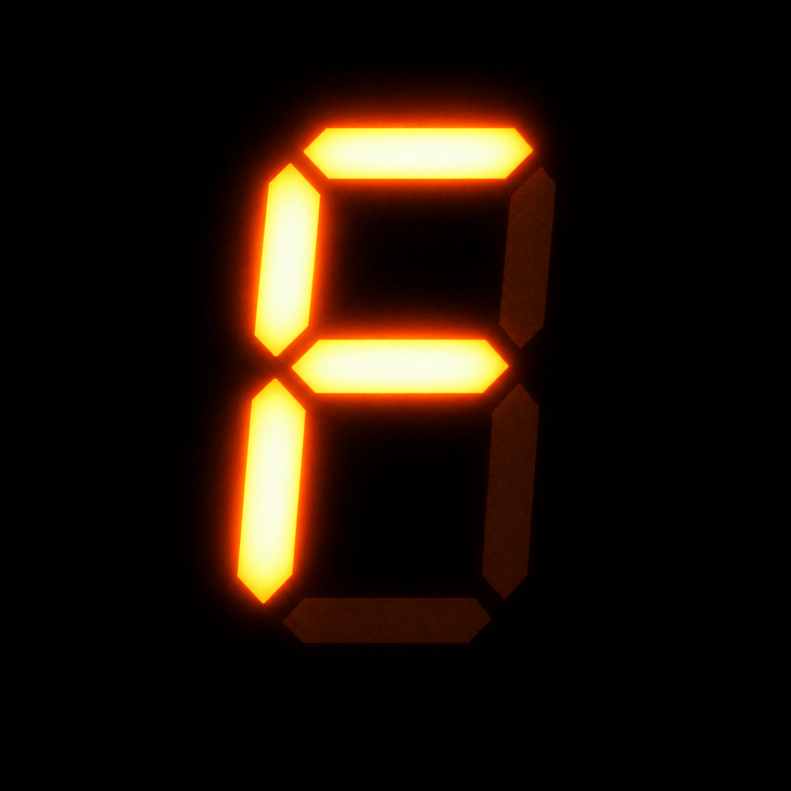
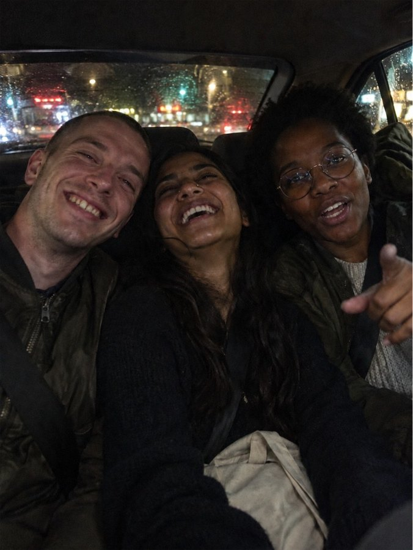

Fadelens press kit
Fadelens is an iPhone camera that shoots like the cameras of the early 2000s. The real flash fires, each camera's sensor is modelled rather than filtered, and there's a four-shot photo booth. Free to start, pay once for Pro.
At a glance
| Platform | iPhone, iOS 18 or later |
| Price | Free download. Pro is a one-time purchase; no subscription; Family Sharing on. |
| Free tier | CCD '04, Flip and Webcam '06, free forever: unlimited shots, full resolution, no watermark |
| Try before buying | Every Pro camera shows live in the viewfinder before you buy |
| Privacy | No account, no ads, no tracking. Photos are developed on the iPhone and never uploaded. Anonymous usage statistics can be turned off in Settings. |
| Developer | Muxtor, an independent developer |
App icon

1024 × 1024 PNG, tap to download.

Before and after

How it works
Real Flash. In the dark, the iPhone's own flash fires. Fadelens finds the subject with on-device Vision and shapes the light like a 2000s xenon flash: bright faces, hard shadows, the room falling to black.
Modelled, not filtered. Each camera's noise, colour, lens softness, vignette, bloom, CCD smear, JPEG blocks and date stamp are worked out in that camera's own pixels.
The preview is the photo. The live viewfinder runs the same pipeline as the saved photo.
Contact
Muxtor · muxtordevcom@gmail.com. Press codes on request.